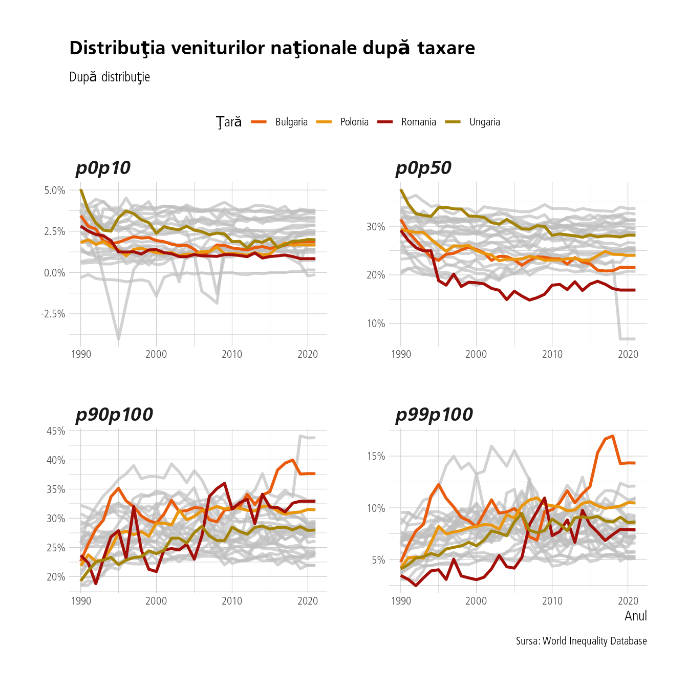
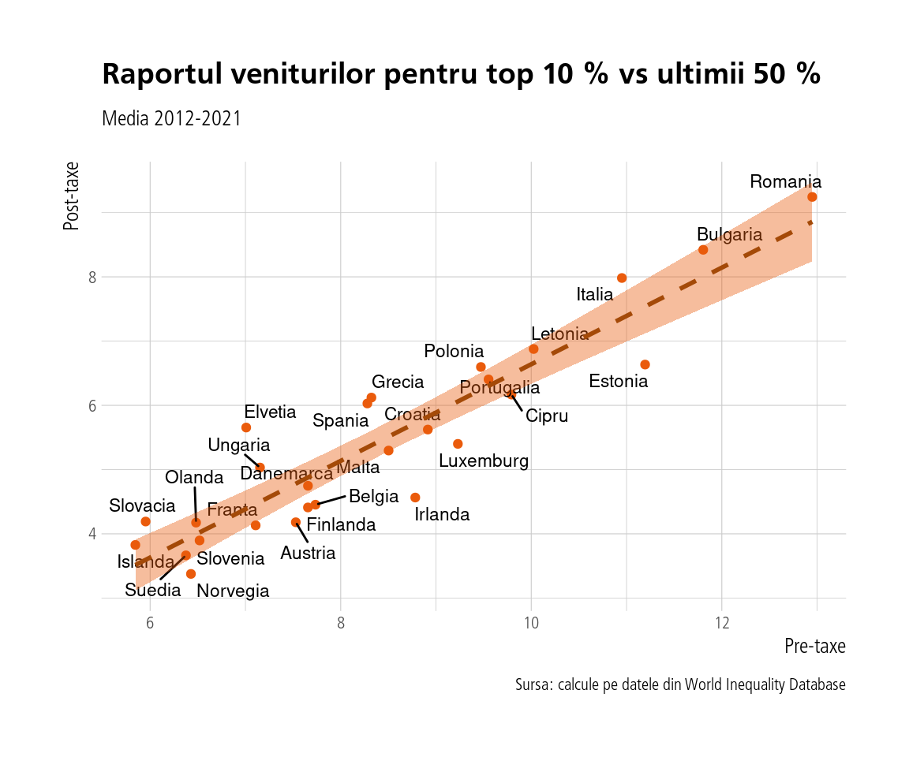

3 Aspecte distributive ale taxării
În acest capitol vom investiga aspecte de ţin de relaţia dintre sistemul fiscal şi distribuţia veniturilor şi a averilor folosind date din noua bază de date World Inequality Database ce poate fi accesată aici. Vom încerca să demonstrăm că sistemul fiscal din România este în mod evident regresiv. Dar pentru început, să ne familiarizăm cu faptele.
Procentul din venitul naţional înaintea taxelor care revine diferitelor categorii de distribuţie:
Şi pentru venitul naţional după taxe:

România, dar şi alte ţări din Europa de Est stau destul de rău la capitolul inegalitate, fiind în top atât înainte cât şi după taxe. În cazul României venitul revenit celor mai bogaţi 1 % din societate e totuşi mai scăzut după taxare, dar la categoria top 10 % situaţia e tot acută comparativ cu restul ţărilor europene.
Vom calcula raportul dintre procentele de venit naţional care revin celor top 10 % şi ultimilor 50 % atât pentru venitul pre-taxe cât şi pentru venitul post-taxe. Cele două rapoarte vor fi pe axele x, respectiv y în graficul următor. Urmărim aceşti doi indicatori pentru media perioadei 2012-2021 (ultimii zece ani).

Observăm că România are cel mai mare raport atât pre cât şi post taxare. Acest lucru sugerează că sistemul fiscal nu redistribuie suficient către cei din decilele inferioare ale distribuţiei. Acest lucru se întâmplă în ţara cu cea mai mare inegalitate din Europa dacă excludem Serbia (nu apare în imagine). Merită să calculăm şi procentele cu care sistemul fiscal reduce inegalitatea pre-taxe pentru fiecare ţară, media pe ultimii zece ani.

Observăm că România se află printre ţările cu cele mai mici raporturi ale reducerii inegalităţii pre-taxe prin taxare. Combinaţia de inegalitate mare pre-taxare combinată cu redistribuţia scăzută duce la situaţia actuală. Procentele mici pentru Spania şi Italia nu trebuie să ne mire, întrucât aceste state cheltuiesc mult cu pensiile (populaţii îmbătrânite), lucru care uniformizează inegalitatea pre-taxe într-o oarecare măsură (inegalitatea pre-taxe este calculată conform autorilor ca venitul naţional revenit factorilor de producţie minus contribuţiile pentru pensii şi asigurări sociale plus distribuţiile pentru ele). Ele au oricum o inegalitate pre-taxe mai redusă în primul rând.